Projects
A selection of my geospatial and earth observation projects. Click any card to see the full write-up.
Browse by theme
Carbon & MRV Forest & Mangrove Change Biodiversity & NRM Web Apps & Data Pipelines
Carbon & MRV

A prototype MRV pipeline for Afforestation/Reforestation projects under the Gold Standard for the Global Goals (GS4GG), integrating field data from Mergin Maps with land cover analysis and automated reporting.
Python QGIS Gold Standard Mergin Maps
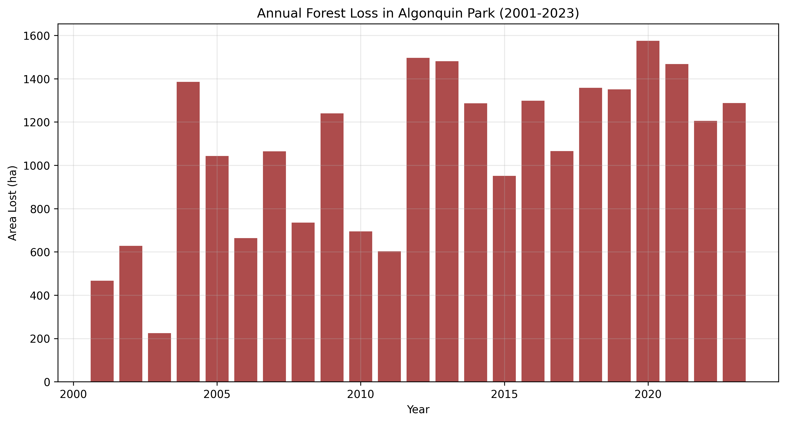
A reusable toolkit for conducting Performance Benchmark analysis under the VM0047 methodology for carbon credit projects, applicable to any project area worldwide.
Python GEE VCS VM0047
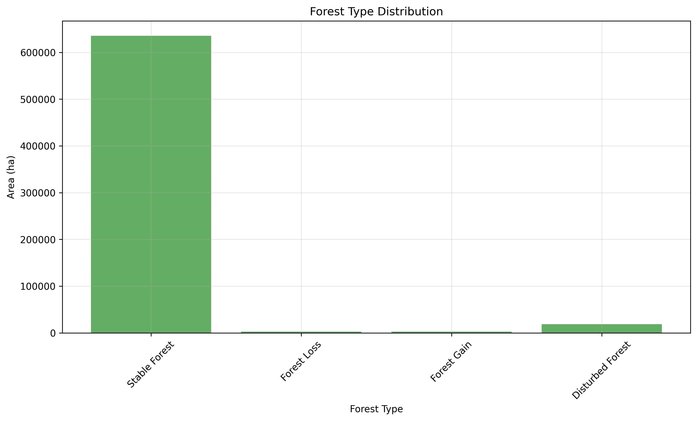
Automated extraction and processing of geospatial data for soil carbon modeling using Google Earth Engine, integrating GRIDMET, SoilGrids, MODIS, and other datasets for any Area of Interest.
Python GEE SoilGrids MODIS
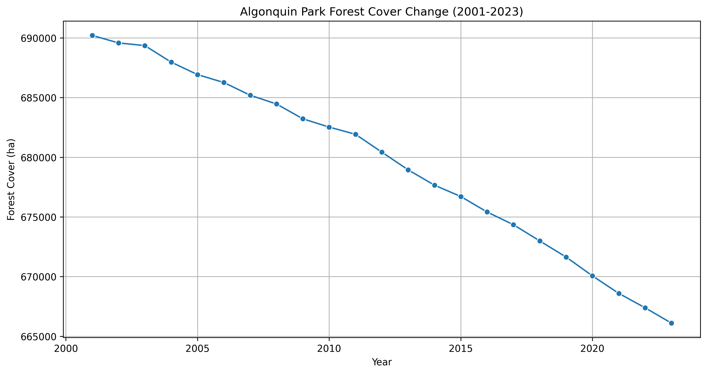
Wildlands League – Ecosystem Services
Geospatial analysis and carbon assessment for a transition from conventional logging to carbon credit development, including deforestation history, spatial baseline, and carbon standard selection.
Python GEE QGIS Carbon Standards
Forest & Mangrove Change

CO2 Operate Cameroon Highlands
Remote sensing component for a Plan Vivo carbon certification project in the Cameroon Highlands: deforestation history assessment (2001–present), forest/non-forest classification, and polygon review.
GEE QGIS Plan Vivo Landsat
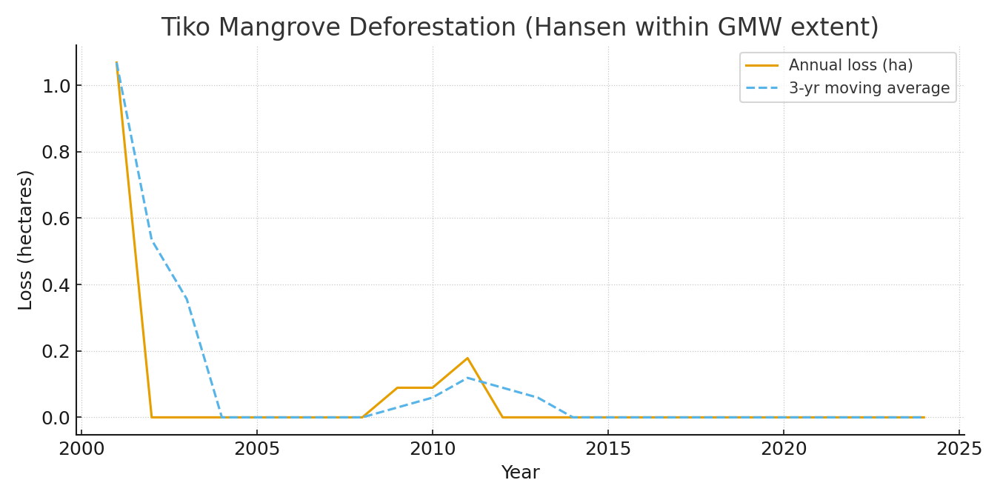
Mapping and quantifying mangrove deforestation in the Tiko area of Cameroon using Hansen GFC constrained to Global Mangrove Watch v3 extent, with yearly loss analysis and printable maps.
GEE Python QGIS Hansen GFC GMW v3
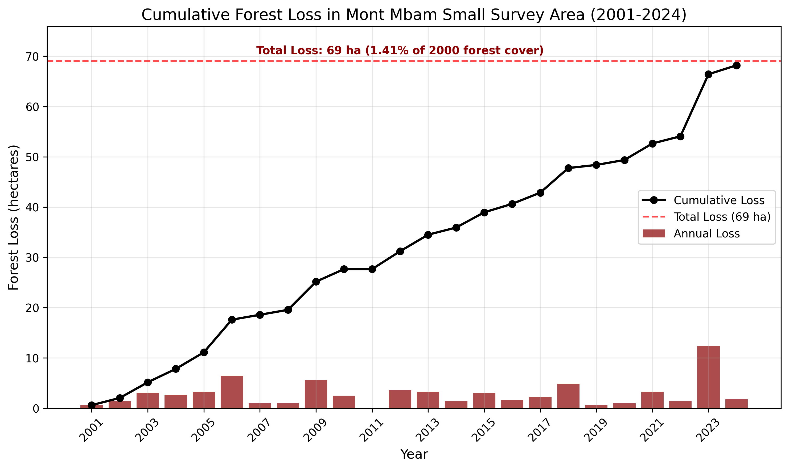
Comprehensive land cover change analysis in the Mont Mbam region using CCDC and Hansen GFC, covering 1987–2024 forest loss patterns, fire disturbance, and landscape dynamics.
GEE QGIS CCDC Hansen GFC
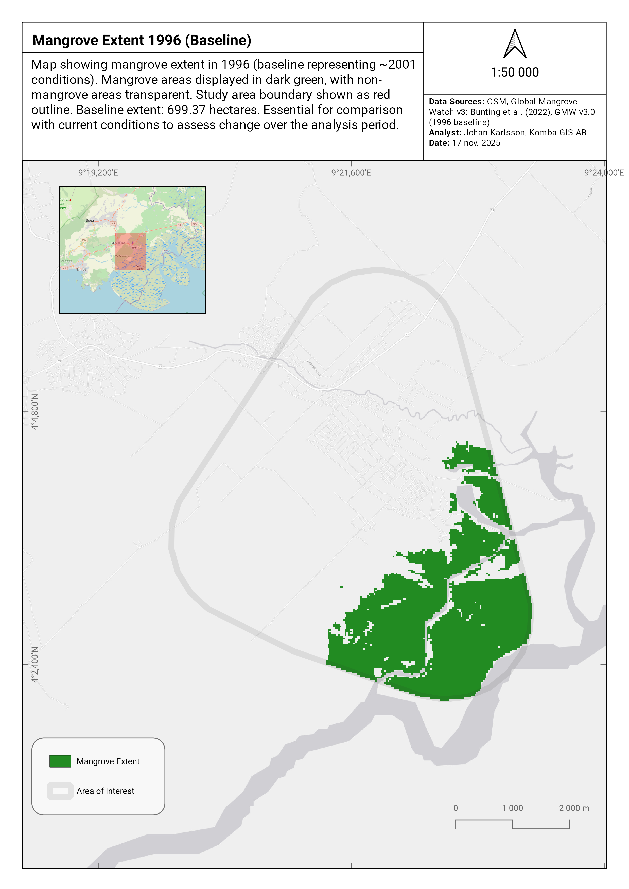
Remote sensing analysis of the Tiko Mangrove ecosystem in Cameroon using satellite imagery and machine learning to assess degradation, identify threats, and support conservation planning.
GEE Python QGIS Mangrove
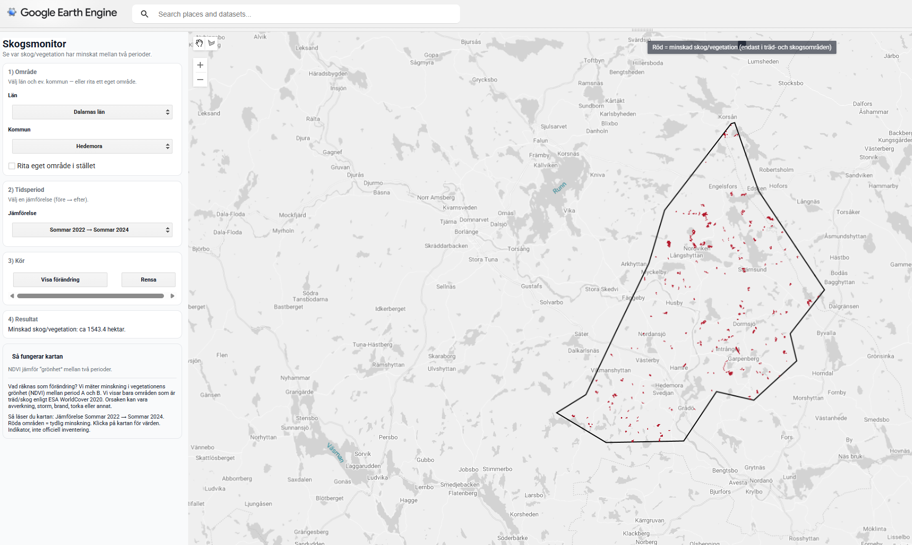
A Google Earth Engine App demonstrating satellite-based forest change monitoring in Sweden for environmental NGOs, using Sentinel-2 NDVI change detection with an interactive UI.
GEE JavaScript Sentinel-2 NDVI
Biodiversity & NRM
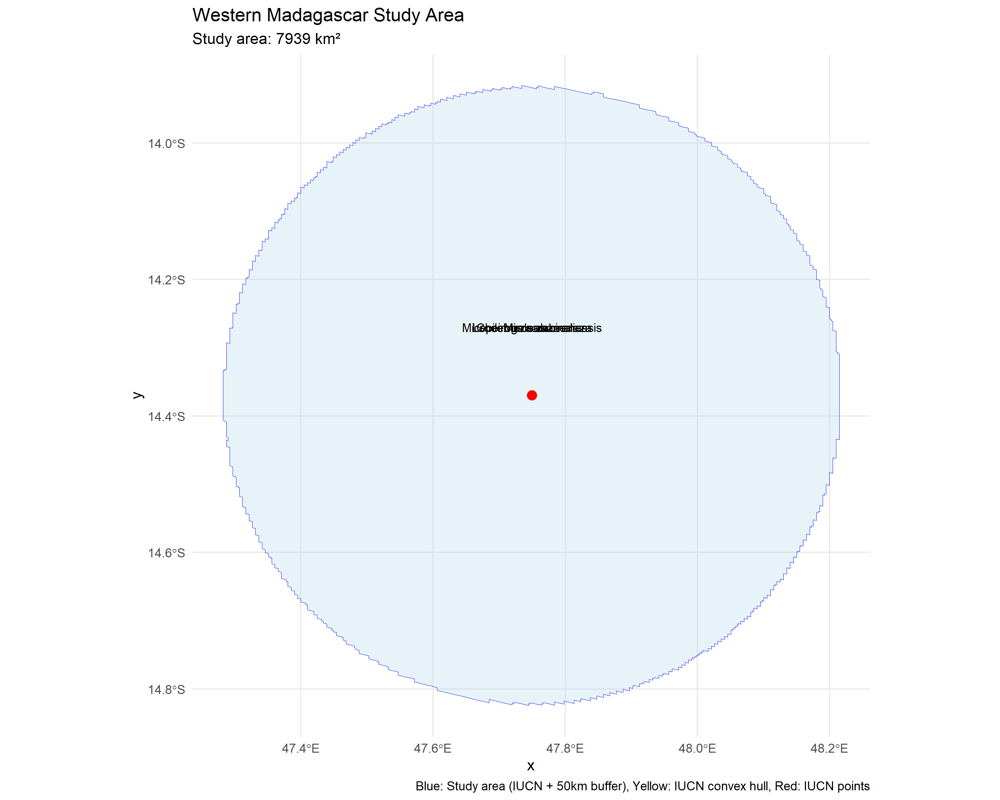
Species Distribution Modeling for five lemur species in Madagascar using AlphaEarth satellite embeddings, SRTM, and WorldClim bioclimatic variables, with LASSO regularization and Random Forest.
R Python biomod2 AlphaEarth
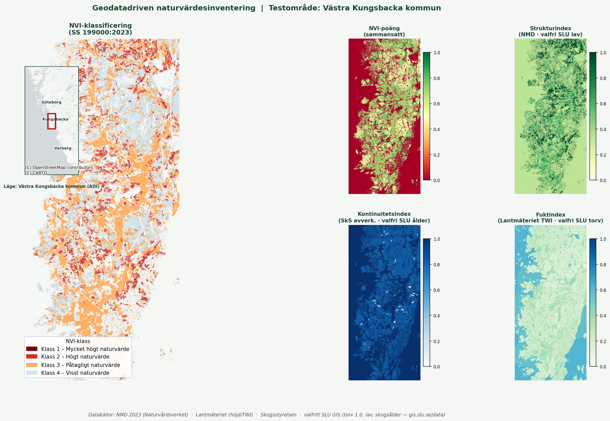
A reproducible pipeline combining Swedish open geodata (NMD, Lantmäteriet, Skogsstyrelsen) into a prioritized hotspot map for field NVI surveys, published on GitHub Pages.
Python QGIS PostGIS NMD
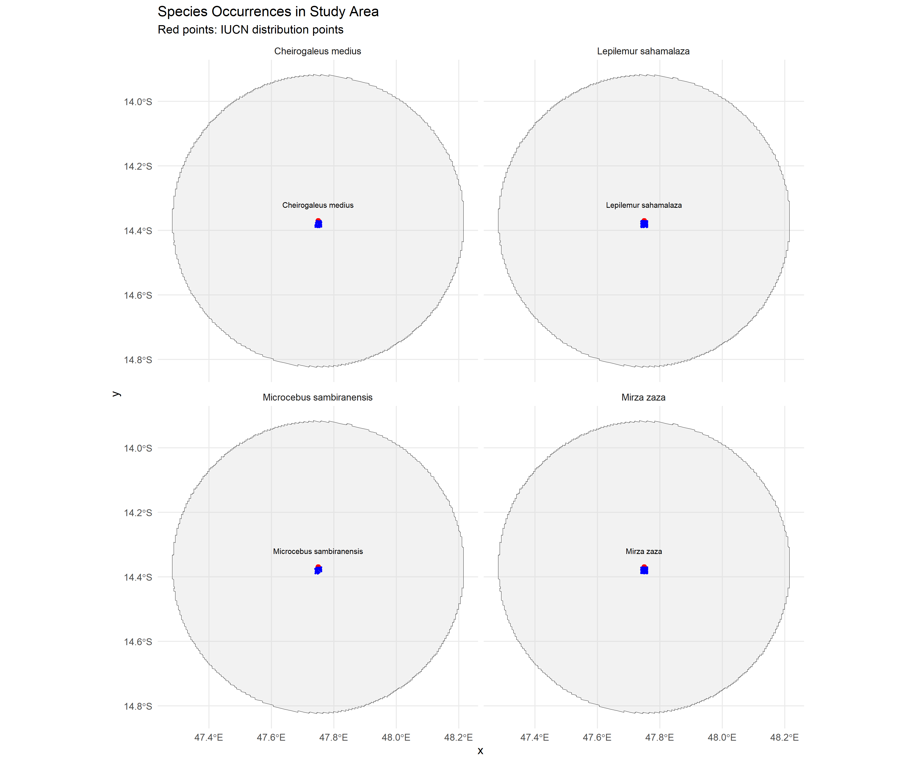
A collection of biodiversity maps visualizing species distribution data for galagos in Tanzania and lemurs in Madagascar, created in QGIS and published as interactive web maps.
QGIS Leaflet GBIF
Web Apps & Data Pipelines
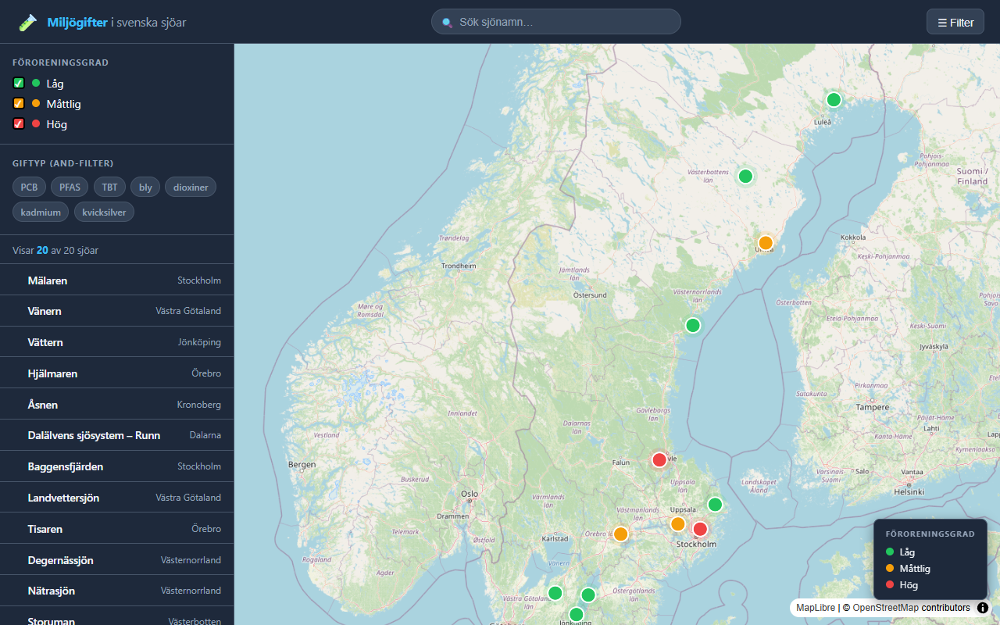
An interactive web map visualizing environmental toxins (PFAS, mercury, PCB, cadmium) in Swedish lakes, with clickable markers, color-coded contamination levels, and substance filtering.
JavaScript Leaflet HTML/CSS
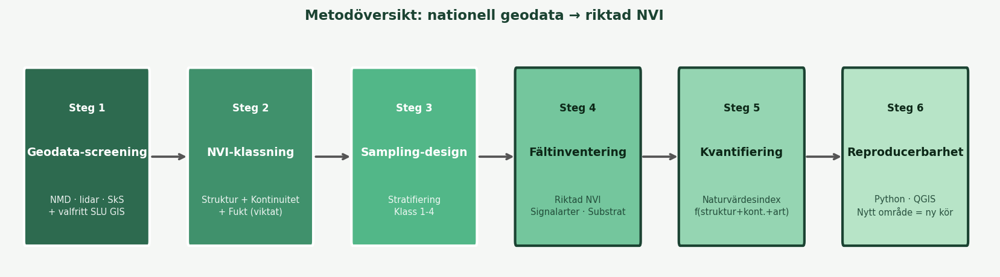
An automated geodata workflow built with Python and GitHub Actions: reads GeoPackage data, calculates areas, filters by minimum area threshold, and logs each run.
Python GeoPandas GitHub Actions
A web application for downloading and processing geographic data from Swedish authorities, simplifying access to open geodata sources.
JavaScript Web App Swedish Geodata
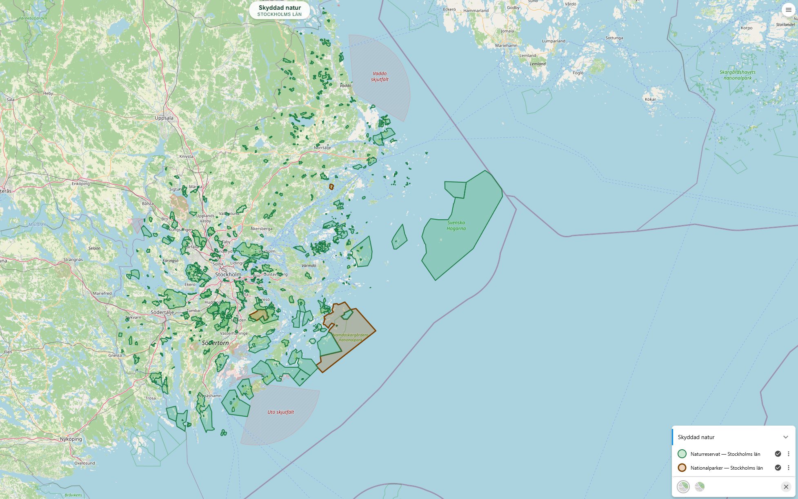
Naturkarta – Skyddad natur och skog
Web GIS portal built on Origo Map displaying Swedish nature reserves, national parks, Natura 2000, and logging notifications with clickable popups.
Origo Map OpenLayers WMS GeoJSON
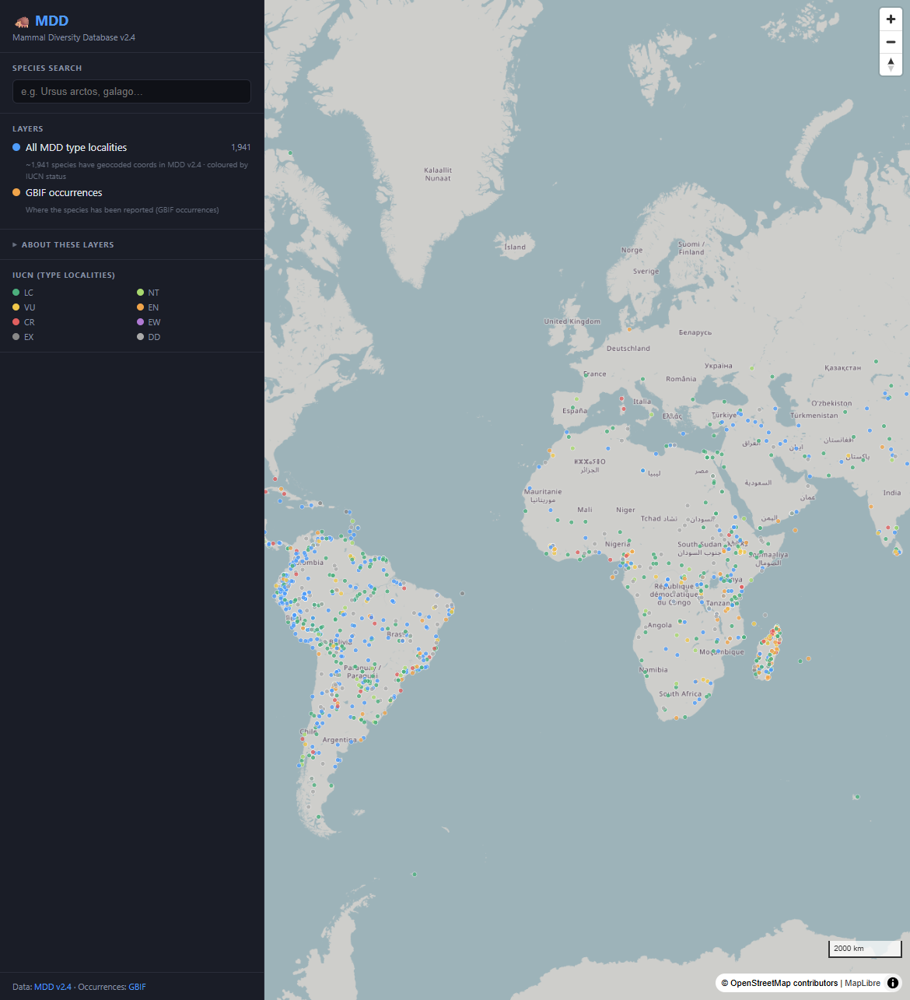
Mammal Diversity Database (MDD)
Interactive MapLibre web map and FastAPI over MDD v2.4 — mammal taxonomy, type localities by IUCN status, and GBIF occurrence overlays.
DuckDB FastAPI MapLibre React Docker